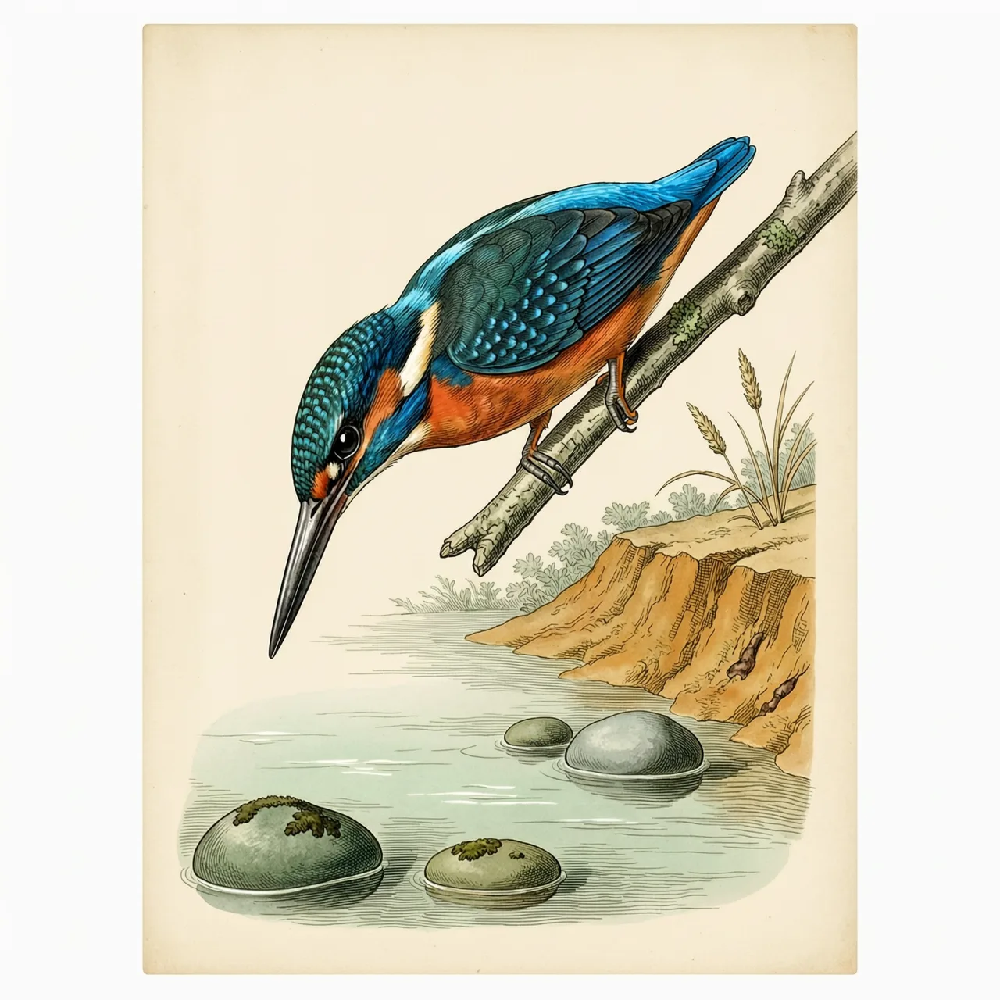
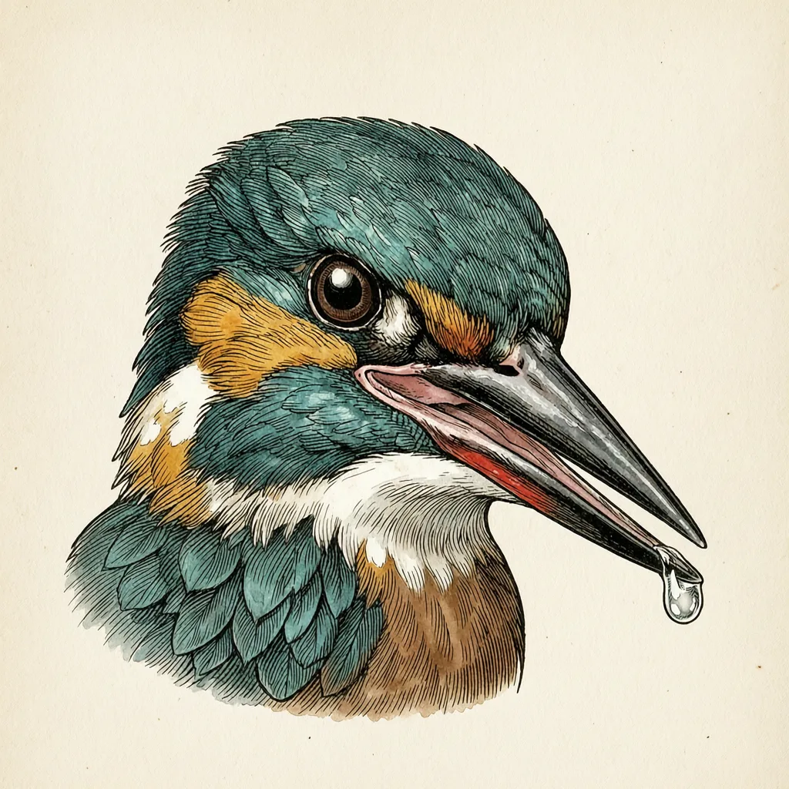

普通翠鸟是世界上最小的翠鸟科成员之一，分布在欧亚非三块大陆的水域边。它静立盯梢后垂直扎进水里，靠特化的视觉看清水下猎物，薄冰也能穿破。这条背披宝石蓝、胸腹橙红的小鸟对水质要求极高，而它最早的科学名字被林奈记在八哥所属的属下。
15—18公分的身长，配得上它的河岸并不多。普通翠鸟分布在欧亚非三块大陆的水域边，却是欧洲大部分地区唯一能见到的翠鸟科成员。它不在意水面够不够大，在意的是另外两件事：水要清到能看清水下的鱼，岸要有一段能让它掘洞的土堤，巢就筑在河床边的洞里，每次产5—7枚蛋。温暖地区的普通翠鸟常年留在原地，高纬度的个体入冬南移——这个物种对严冬的耐受相当低，对水质和沿岸环境的要求却很高，数量因此逐步减少。
「钓鱼翁」这个名字来自它的捕食姿态：长时间静止停在贴近水面的枝头盯着水下，等猎物进入射程。看准之后是近乎垂直的一击，整个身子扎进水里。普通翠鸟有一套特化的视觉构造，能看清水面下的猎物；水和空气折光不同，水下的鱼看上去比实际位置偏高，这份特化要对付的正是这个偏差。它的喙长37—47公釐，宽而深，咬住滑溜的鱼不容易脱手。冬天河面结起薄冰，普通翠鸟还能穿破冰层把猎物取出来。
今天没人会把普通翠鸟和八哥联系起来，但林奈在1758年给它定的第一个名字是 Gracula atthis——Gracula 正是八哥、鹩哥那群雀形目鸟类所在的属，这条记录的模式产地还留在埃及。同期另一个名字 Alcedo Ispida 如今成了它的亚种之一，同时也是翠鸟属的模式种。眼下要分辨雌雄倒是不用翻文献：雄鸟下半截喙与上喙一样乌黑，雌鸟那一段带着红。
